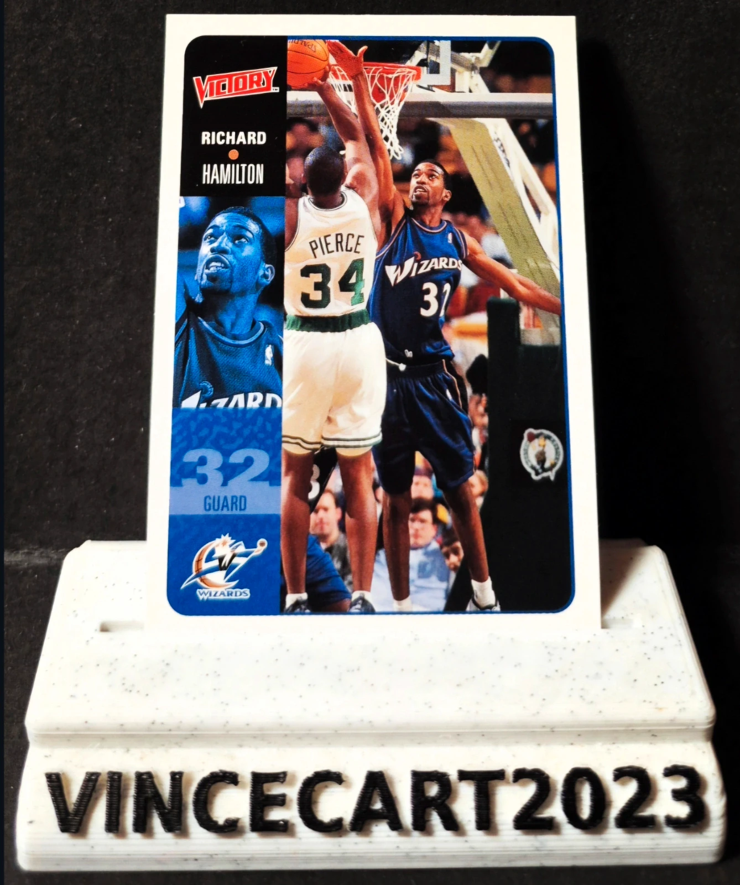

Carte NBA Richard Hamilton #225 – Upper Deck Victory 2000 – Washington Wizards – Vintage
1,00 €
Vends carte Richard "Rip" Hamilton #225 de la collection Upper Deck Victory 2000. 🏀 Joueur : Richard Hamilton (Rip Hamilton) 🏀 Équipe : Washington Wizards 🏀 Collection : Upper Deck Victory 2000 🏀 Numéro : #225 🏀 État : Très bon état (voir photos) Belle carte vintage des débuts NBA de Richard Hamilton avant ses années de gloire avec les Detroit Pistons. Un incontournable pour les collectionneurs NBA des années 2000. 📦 Carte protégée sous sleeve